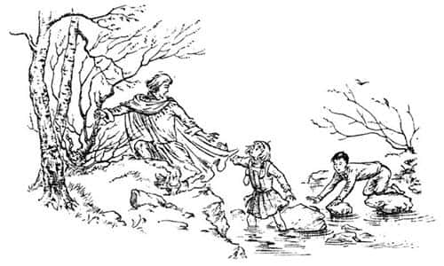
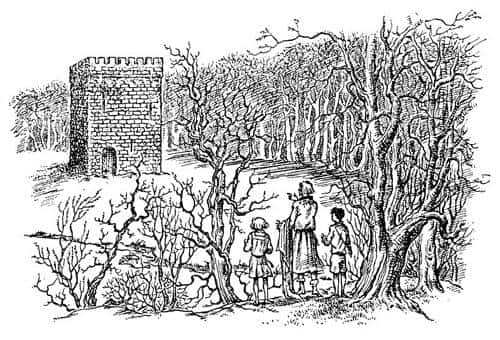
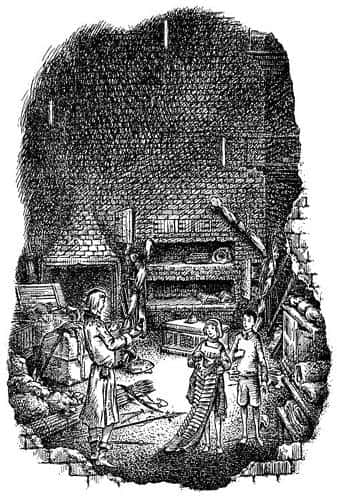

Kral’a Yardım Nasıl Geldi?
Kral’ın bu umutsuz hali uzun sürmedi. Peş peşe iki tane gümbürtü duyuldu; önünde iki çocuk duruyordu. Az önce önündeki ağaçlıkta kimse yoktu. Çocukların, bağlı olduğu ağacın arkasından gelmediklerini biliyordu; öyle olsa duyardı. Aniden ortaya çıkmışlardı. Çocuklara ilk baktığında tıpkı rüyasındakiler gibi onların da soluk renkli tuhaf elbiseler giydiklerini fark etti; ikinci kez baktığındaysa, bu çocukların yedi kişilik gruptaki en genç kız ve oğlan olduğunu anladı.
“Vay be!” dedi oğlan, “Nefes kesici! Sanmıştım ki…”
“Acele et ve onun bağlarını çöz” dedi kız. “Sonra konuşuruz.” Tirian’a dönerek, “Kusura bakmayın geç kaldık. Olabildiğince çabuk geldik” dedi.
Kız konuşurken oğlan cebinden bir çakı çıkardı; Kral’ın bağlarını kesmeye başladı ve onu çabucak kurtardı. Ama Kral’ın her tarafı öylesine tutulmuş ve hissizleşmişti ki, onu tutan son ip de kesildiğinde yere yığıldı. Bacaklarını iyice ovuşturup biraz canlanınca ayağa kalktı.
“Bana bak” dedi kız. “Akşam yemeği yerken bize görünen sendin değil mi? Yaklaşık bir hafta önce.”
“Bir hafta mı, güzel kız? dedi Tirian. “Rüyalarım beni sizin dünyanıza on dakikadan az bir zaman önce götürdü.”
“Her zamanki karışıklık, Pole” dedi çocuk.
“Şimdi hatırlıyorum” dedi Tirian. “Eski hikâyelerde bu da anlatılır. Sizin ülkenizin zamanı bizimkinden farklı. Zamandan bahsetmişken, buradan gitmenin tam zamanıdır, düşmanlarım yakında gelir. Benimle gelecek misiniz?”
“Elbette” dedi kız. “Sana yardıma geldik.”
Tirian ayağa kalktı ve aceleyle tepeden aşağı, güneye doğru yürüdüler. Nereden gitmek istediğini biliyordu; ilk tercihi iz bırakmayacakları kayalık bir yerlere gitmekti, ikincisiyse bir dereyi takip etmek ve böylece koku bırakmamaktı. Yolculuk boyunca bir saat kadar tırmanmış, sulara bata çıka yürümüşlerdi; kimsenin konuşacak hali kalmamıştı. Bu durumda bile Tirian arkadaşlarına göz atıp duruyordu. Başka bir dünyadan gelen yaratıkların yanı başında yürümenin şaşkınlığı biraz başını döndürmüştü; o anda yaşadıkları eski hikâyelerin gerçekliğini kanıtlıyordu… Artık her şey olabilirdi.

Küçük bir vadinin girişine geldiklerinde, Tirian, “Artık o hainlerden gelecek tehlikelerden uzaktayız, daha yavaş yürüyebiliriz” dedi. Güneş yükselmişti, dallarda çiy damlaları parıldıyordu, kuşlar cıvıldamaya başlamıştı.
“Bir şeyler atıştırsanız! Size söylüyorum, efendim, biz kahvaltı ettik” dedi oğlan.
Tirian çocuğun “atıştırmak” diyerek neyi kastettiğini çok merak etmişti, oğlan taşıdığı şişkin çantayı açıp da yağlı ve ezik bir paket çıkardığında her şeyi anladı. Kurt gibi aç olduğu, o ana kadar hiç aklına gelmemişti. Pakette iki yumurtalı, iki peynirli, iki tane de ezmeli sandviç vardı. O kadar aç olmasaydı ezmeli sandviçlere pek yüz vermezdi, çünkü Narnia’da hiç kimse bu tür şeyler yemezdi. Altıncı sandvici de bitirdiğinde vadinin dibine inmişlerdi; orada, küçük bir pınarın kaynadığı yosunlu bir kayalık buldular. Durdular, su içip terli yüzlerini yıkadılar.
“Artık” dedi kız ıslak saçlarını geriye iterek, “kim olduğunu, neden bağlandığını ve neler olduğunu anlatır mısın?”
“Seve seve küçük hanım” dedi Tirian. “Ancak yürümeye devam etmemiz gerekiyor.” Yürürlerken Tirian onlara kim olduğunu ve başına gelenleri anlattı. “Şimdi” dedi sonunda, “bir kuleye gideceğiz. Orası büyükbabamın zamanında inşa edilen üç kuleden biridir, Lamba Çorakları’nı o civarda saklanan çok tehlikeli haydutlardan korumak üzere yapılmıştır. Neyse ki anahtarlarımı almadılar. O kulede silah depoları, zırhlar ve bir miktar yiyecek bulacağız; ama fazla ümitlenmeyin çünkü yiyecekler kuru bisküviden ibaret. Planlarımızı yaparken emniyette oluruz. Şimdi rica ederim bana kim olduğunuzu ve hikâyenizi anlatın.”
“Ben Eustace Scrubb ve bu da Jill Pole” dedi oğlan. “Uzun yıllar önce buraya bir kez daha gelmiştik. Bizim zamanımızla bir yılı geçti. Prens Rilian denilen bir delikanlı vardı ve bu delikanlıyı yeraltında esir tutuyorlardı, fakat Suratsız ayağını ateşe…”
“Ha!” diye bağırdı Tirian, “siz Kral Rilian’ı o uzun süreli büyüden kurtaran Eustace ve Jill misiniz?”
“Evet, biziz” dedi Jill. “O Prens Rilian kral oldu ha? Ah, kuşkusuz ölmüştür. Unuttum…”
“Ben onun yedinci kuşaktan torunuyum. O öleli iki yüz yıldan fazla oluyor” dedi Tirian.
Jill yüzünü buruşturdu. “Of!” dedi. “Bu da Narnia’ya geri gelmenin en korkunç yanı.” Eustace konuşmaya devam etti.
“Pekâlâ, artık kim olduğumuzu biliyorsunuz, efendim” dedi. “Hikâyemiz şöyle. Profesör ve Polly Hala, Narnia’nın dostları olan herkesi bir araya toplamıştı.”
“O isimleri bilmiyorum, Eustace” dedi Tirian.
“Onlar her şeyin başlangıcında, hayvanların konuşmayı öğrendiği gün Narnia’ya gelen ilk kişilerdir.”
“Aslan’ın yelesi adına!” diye bağırdı Tirian. “O ikisi ha! Lord Digory ve Leydi Polly! Sizin orada hâlâ hayattalar ha? Ne kadar sevindirici! Ne kadar şaşırtıcı! Hadi anlat, anlat.”
“O bizim gerçek halamız değil, biliyorsun” dedi Eustace. “O Bayan Plummer’dır. Ama biz ona Polly Hala deriz. O ikisi eğlenmek ve Narnia hakkında doya doya konuşmak için hepimizi bir araya toplamıştı (çünkü böyle şeyler hakkında konuşabileceğimiz hiç kimse yok), ayrıca Profesör bize burada ihtiyaç duyulduğunu da hissetmiş. Sonra, nasıl olduğunu bilmiyoruz ama hayalet gibi sen geldin ve bizi ölesiye korkutarak, tek kelime bile konuşmadan kayboldun. Bir tuhaflık olduğunu kesinlikle biliyorduk. Tek sorun buraya gelebilmekti. Sadece istemekle buraya gelmek mümkün değil. Böylece uzun süre tartıştık ve sonunda Profesör tek yolun büyülü yüzükler olduğunu söyledi. O ve Polly Hala, biz doğmadan çok uzun zaman önce, onlar daha çocukken o yüzüklerle buraya gelmişler. Ne var ki, yüzükler Londra’daki (bu bizim başkentimizdir, efendim) bir evin bahçesinde gömülüydü ve ev bir başkasına satılmıştı. Tek sorun onları oradan alabilmekti. Ne yaptığımızı asla tahmin edemezsin! Peter ve Edmund - seninle konuşan Yüce Kral Peter’di - sabahleyin erkenden, kimse uyanmadan bahçeye arkadan girip yüzükleri alabilmek için Londra’ya gitti. Biri görürse, onları kanalizasyon tamircisi sansın diye işçi gibi giyindiler. Keşke ben de onlarla beraber gidebilseydim, çok eğlenmiş olmalılar. Bu işi başardılar ve Peter ertesi gün bize yüzükleri bulduğuna dair bir telgraf çekti - bu mesaj göndermenin değişik bir yoludur efendim, bunu size başka zaman anlatırım. Ertesi gün Pole ve ben okula dönmek zorundaydık; okula giden sadece ikimiziz, aynı okulda okuyoruz. Peter ve Edmund okula giderken bizi yolda bir yerde karşılayacak ve yüzükleri vereceklerdi. Narnia’ya gidecek kişiler bizdik, çünkü yaşlılar yapamıyordu bunu. Neyse, trene bindik - tren dünyamızdaki insanların seyahat araçlarından biridir; birbirine bağlanmış bir sürü vagon - Profesör, Polly Hala ve Lucy de bizimle geldi. Mümkün olduğunca beraber olmak istiyorduk. Sonunda trene bindik. Diğerleriyle buluşacağımız istasyona girmek üzereydik ve ben onları görebilmek için pencereden dışarıya bakıyordum ki, aniden bir sarsıntı oldu, bir gürültü duyuldu; kendimizi Narnia’da, siz Ekselanslarını da ağaca bağlı bir halde bulduk.”
“Öyleyse yüzükleri kullanmadınız” dedi Tirian.
“Hayır” dedi Eustace. “Görmedik bile. Aslan, yüzüklere gerek kalmadan kendi yöntemleriyle getirdi bizi.”
“Yüzükler Yüce Kral Peter’de, öyle mi?” dedi Tirian.
“Evet” dedi Jill. “Ama kullanabileceğini sanmıyoruz. Diğer iki Pevensie - Kral Edmund ve Kraliçe Lucy - buraya son kez geldiklerinde, Aslan bir daha Narnia’ya geri dönmeyeceklerini söylemiş. Yüce Kral’a da aynı türden şeyler söylemişti daha önce. İzin verilseydi mermi hızıyla geleceğinden emin olabilirsin.”
“Of!” dedi Eustace. “Hava da iyice ısındı. Kuleye yaklaştık mı, efendim?”
“Bakın” dedi Tirian parmağıyla göstererek. Ağaçların arkasından yükselen gri burçlar pek uzakta değildi; bir dakikalık bir yürüyüşten sonra açık ve otluk bir alana geldiler. Otluk alanın ortasından bir nehir geçiyordu; nehrin karşı yakasında, birkaç dar penceresi ve pencerelerin bulunduğu duvarda da çok ağır görünen kapısıyla hiç oraya yakışmayan kare şeklinde bir kule vardı.

Tirian ortalıkta düşman olmadığından emin olmak için dikkatle sağa sola baktı. Sonra kuleye doğru yürüdü, av elbisesinin içindeki ince gümüş zincire asılı olan bir deste anahtarı çıkarabilmek için bir süre durdu. Çıkardıkları, güzel anahtarlardı. İki tanesi altındı, birçoğu güzelce işlenmişti; belli ki bunlar saraylardaki önemli ve gizli odaları ya da saray hazinelerinin bulunduğu tatlı kokulu ağaçlardan yapılmış kutu ve sandıkları açmak için yapılmışlardı. Ama kilide soktuğu, sıradan, büyük bir anahtardı, özensiz yapılmıştı. Kilit sıkışmıştı sanki, Tirian anahtarı çeviremeyeceğinden korkmaya başlamıştı ki, kapı hafif bir gıcırtıyla açılıverdi.
“Buyurun dostlarım” dedi Tirian. “Sanırım Narnia Kralı’nın şu an için misafirlerini ağırlayabileceği en iyi yer burası.”
Tirian bu iki yabancının iyi yetiştirilmiş gençler olduğunu görmekten memnundu. İkisi de bunun önemli olmadığını, her şeyin düzeleceğinden emin olduklarını söylemişti.
Aslında içerisi hiç de iyi değildi. Son derece karanlıktı ve rutubet kokuyordu. Sadece bir odadan ibaretti ve duvarları taş çatıya kadar yükseliyordu; bir köşede, burçlara çıkabilmenizi sağlayacak küçük bir kapıya uzanan tahta bir merdiven duruyordu. Uyumak için birkaç kaba ranza, bir sürü kilitli dolap, bohçalar ve yıllardır içinde ateş yakılmamış gibi görünen bir ocak vardı içeride.

“Her şeyden önce dışarıya çıkıp biraz odun toplasak iyi olur değil mi?” dedi Jill.
“Henüz değil arkadaşlar” dedi Tirian. Silahsız yakalanmamaya kararlıydı; gerekli malzemelerin depolandığından emin olmak için bu garnizon kulelerinin yılda bir kez teftiş edilmesine dikkat ettiğini hatırlayarak dolapların içine bakmaya başladı. Yayların ibrişimleri yağlı ipek örtüler içindeydi, kılıçlar ve oklar da küflenmeye karşı yağlanmıştı, zırhlar ambalajları içinde pırıl pırıl duruyorlardı. Ama hepsinden daha iyi bir şey vardı. “Bakın!” dedi Tirian, garip bir zincir zırhın yeleğini çıkarıp çocukların gözleri önünde sallarken.
“Çok tuhaf bir zırh, efendim” dedi Eustace.
“Doğru dostum” dedi Tirian. “Bunu bir Narnia cücesi yapmadı. Bu bir Calormen zırhı, tuhaf bir eşya. Her zaman buna benzer birkaç zırhı hazırda tutmuşumdur; çünkü ben ve arkadaşlarımın günün birinde Tisrok’un ülkesinde fark edilmeden dolaşmak için iyi bir nedenimiz olabilir. Şu taş şişeye bakın. İçinde yüzümüze ve ellerimize sürdüğümüzde bizi Calormenliler gibi esmer yapacak bir özsu var.”
“Heyy, yaşasın!” dedi Jill. “Kılık değiştireceğiz! Çok severim kılık değiştirmeyi.”
Tirian sıvıyı nasıl kullanacaklarını, yüzlerine, boyunlarından omuzlarına, ellerinden dirseklerine kadar nasıl süreceklerini gösterdi. Aynısını kendi de yaptı.
“Bu sıvı sertleştikten sonra” dedi, “yıkansak da, rengimiz değişmez. Yağ ve kül hariç hiçbir şey bizi tekrar beyaz Narnialılar’a dönüştüremez. Şimdi tatlı Jill, bakalım bu zırh sana uyuyor mu? Biraz uzun gelebilir, ama korktuğum kadar değil. Kuşkusuz Tarkaan kafilesindeki uşaklardan birine aitti.”
Zırhlardan sonra, insanın başına sıkıca oturan sivri tepeli, küçük ve yuvarlak Calormen miğferlerini giydiler. Daha sonra Tirian dolaptan uzun ve beyaz rulolar çıkarıp miğferlerin üzerine sarık şeklinde sardı. Fakat küçük sivri tepe hâlâ görünüyordu. Eustace ile Tirian eğik Calormen kılıçlarıyla, küçük yuvarlak kalkanları ellerine aldı. Jill’in taşıyabileceği kadar hafif bir kılıç yoktu, ama Tirian ona gerektiğinde kılıç yerine kullanabileceği uzun ve düz bir av bıçağı vermişti.
“Okçuluktan anlar mısın, Bayan?” dedi Tirian.
“Pek fazla değil” dedi Jill, kızararak. “Scrubb fena değildir.”
“Ona inanmayın, efendim” dedi Eustace. “Narnia’dan döndüğümüzden beri okçuluk çalışıyorduk, artık benim kadar iyi. Aslında ikimiz de çok iyi sayılmayız.”
Tirian Jill’e okla dolu bir sadak ve bir yay verdi. Sonraki işleri ateş yakmaktı. Kulenin içi bir mağarayı andırıyor ve insanın içini titretiyordu. Odun toplarken ısınmışlardı, alevler yükseldikçe oda da şenlenmişti. Bununla beraber akşam yemekleri pek sönüktü çünkü ellerinden gelen tek şey, bir dolapta buldukları bisküvileri parçalamak ve kaynar suya koyup tuzlayarak bir tür lapa yapmaktı. Ayrıca sudan başka içecekleri yoktu.
“Keşke bir paket çay getirmiş olsaydık” dedi Jill.
“Ya da bir kutu kakao” dedi Eustace.
“Her kuleye bir ya da iki fıçı şarap konsaymış fena olmazmış” dedi Tirian.